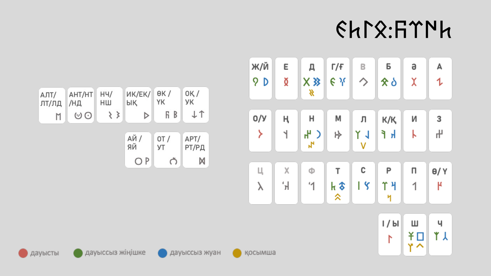
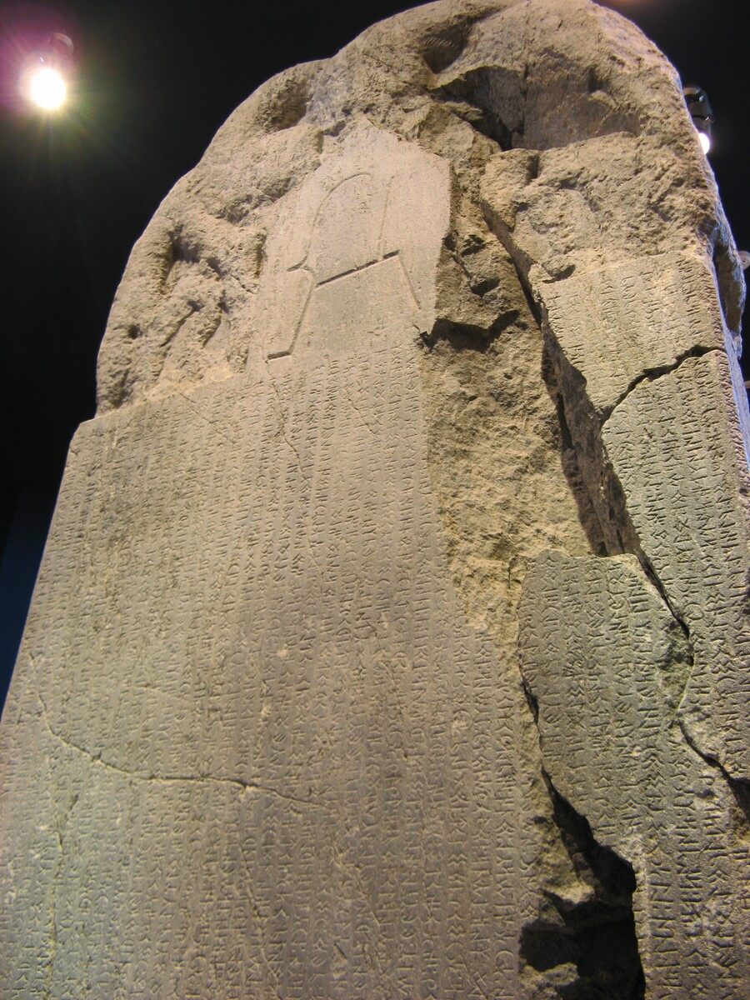
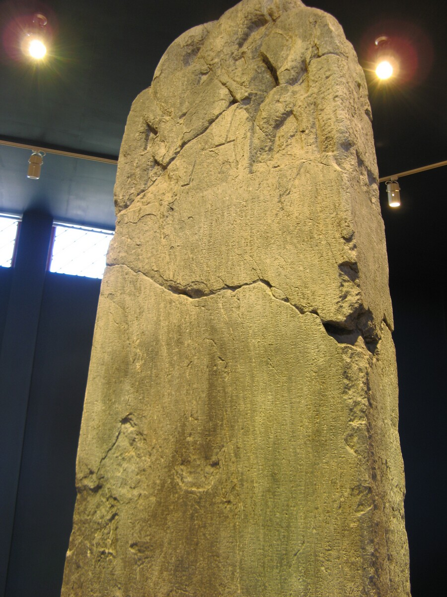
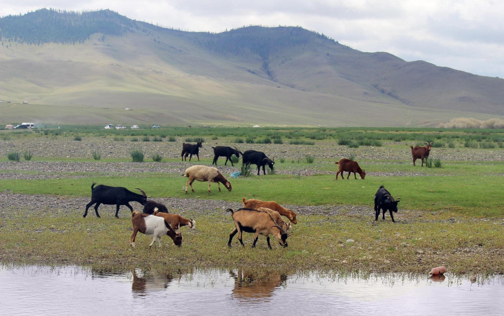

Камераны қосып, саусағыңызды әріп үстінде бір сәт ұстап тұрыңыз.
Сайт таңбаны дауыстап оқып, оның
дауысты не дауыссыз екенін айтады.
Әліпби тақтасы
Таңбаны тікелей тақтадан таңдаңыз
Оқушы қол режимінде саусағын қажетті әріптің үстінде шамамен
1 секунд ұстайды.

Дауысты
Дауыссыз жіңішке
Дауыссыз жуан
Қосарлы не қосымша таңба
Руна жазуы туралы
Орхон-Енисей мұрасы түркі өркениетінің жазба үні саналады
Көне түркі руна жазуы - түркі халықтарының ең маңызды жазба
ескерткіштерінің бірі. Бұл әліпби арқылы қағанат дәуіріндегі
тарих, ел басқару, ерлік, бірлік және ұрпаққа қалдырылған өсиет
сөздер тасқа қашалып жазылған.
КезеңіVI-VIII ғасырлар
Негізгі аймақтарыОрхон, Енисей, Талас өңірі
Белгілі тұлғаларКүлтегін, Білге қаған, Тоныкөк

Күлтегін ескерткішіТүркі қағанатының даңқты тұлғасына арналған тас жазу.
Wikimedia Commons, public domain.

Білге қаған ескерткішіКөне түркі жазба мәдениетінің ең маңызды мұраларының бірі.
Wikimedia Commons, public domain.

Орхон аңғарыОрхон-Енисей жазбалары табылған тарихи-мәдени кеңістік.
Wikimedia Commons, CC0.
Шығу тегі
Бұл жазу не үшін керек болды?
Руна жазуы көне түркі мемлекетінің саяси өмірін, жорықтарын,
ата-баба өсиетін және елдің бірлігін кейінгі ұрпаққа жеткізу үшін
қолданылған.
Ескерткіштер
Ең танымал тас жазбалар
Орхон жазбалары ішінде Күлтегін, Білге қаған және Тоныкөк
ескерткіштері ерекше орын алады. Олар түркі әлемінің тарихи
жадысы ретінде бағаланады.
Әліпби ерекшелігі
Таңбалар жүйесі қалай құрылған?
Әліпбиде дауысты, дауыссыз және қосарлы таңбалар бар. Кейбір
дауыссыздардың жуан және жіңішке нұсқалары бөлек көрсетіледі,
сондықтан дыбыстық айырмашылық анық байқалады.
Оқу бағыты
Мәтінді қалай танимыз?
Көптеген көне түркі мәтіндері оңнан солға қарай оқылады. Әр
таңбаның пішіні қысқа әрі айқын болғандықтан, тасқа қашап жазуға
ыңғайлы болған.
Презентация бөліктері
Сабақта қолдануға болатын дайын құрылым
Бұл блоктарды слайдқа да, мұғалімнің ауызша түсіндіруіне де
қолдануға болады.
1
Руна жазуы деген не?
Оқушыларға көне түркі руна жазуы түркі халықтарының алғашқы
жазба мұрасы екенін қысқаша түсіндіріңіз.
2
Қай жерде табылған?
Орхон, Енисей және Талас аймақтарындағы жазбалар арқылы бұл
мұраның кең таралғанын көрсетіңіз.
3
Қандай тұлғалармен байланысты?
Күлтегін, Білге қаған және Тоныкөк есімдерін атап, олардың
түркі тарихындағы орнын түсіндіріңіз.
4
Әліпбидің ерекшелігі қандай?
Дауысты, дауыссыз және қосарлы таңбалар жүйесін осы
интерактивті тақта арқылы нақты мысалмен көрсетіңіз.
5
Неге бүгін де маңызды?
Бұл жазулар халқымыздың тарихи жадысын, тіл мәдениетін және
мемлекеттік ойлау дәстүрін сақтап жеткізгенін айтыңыз.
6
Тәжірибелік жұмыс
Оқушы әріпті таңдап, дыбысталуын тыңдап, оның дауысты не
дауыссыз екенін анықтап айтып берсін.